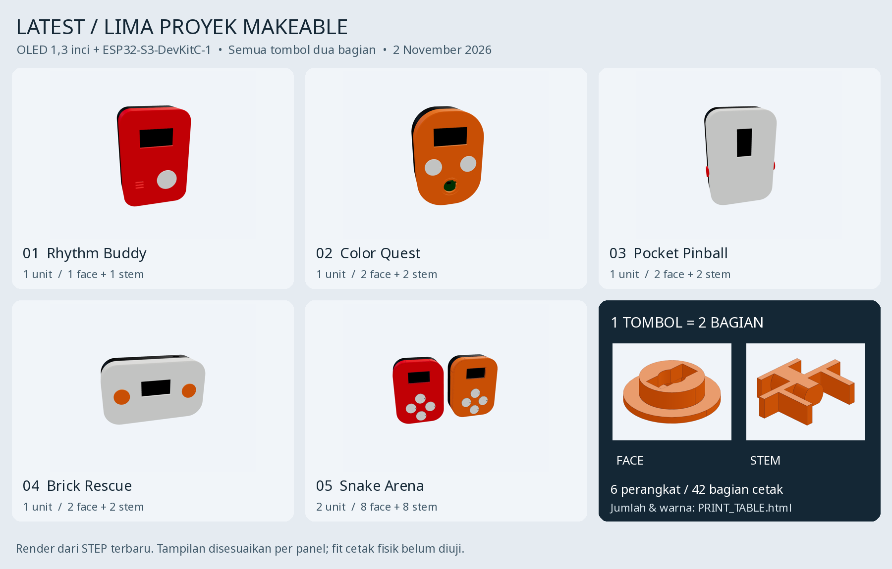
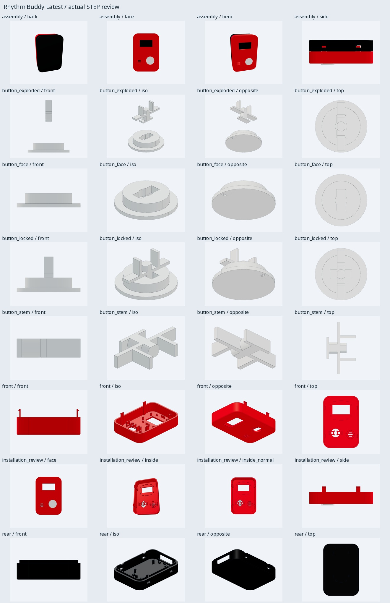
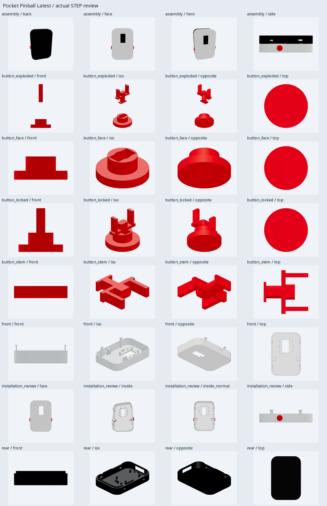
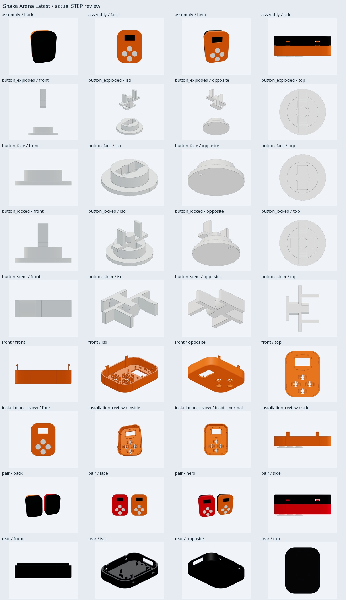

Makeable Pocket Devices
Five compact ESP32-S3 enclosure designs around a shared OLED platform and a repeatable, two-part button mechanism.

01 / CASE STUDYThe system
The latest Makeable package contains Rhythm Buddy, Color Quest, Pocket Pinball, Brick Rescue, and Snake Arena. Each concept uses an ESP32-S3-DevKitC-1 and a separate 1.3-inch SH1106 OLED.
The enclosures share a mechanical approach: front and rear shells, plus two-piece buttons with a quarter-turn locking path. The package lists 42 printable part quantities across six planned physical units.
02 / CASE STUDYMy contribution
- Prepared and reviewed the enclosure CAD and exported STEP/STL packages across five designs.
- Documented the two-part button assembly and its installation path.
- Checked component envelopes, static clearances, shell closure, and file integrity in the digital models.
03 / CASE STUDYCurrent status
The design package includes CAD, print files, assembly guides, and digital validation records for five concepts. Slicing, printed fit, and stock hardware compatibility remain unverified.
The images here are CAD renders. They show design intent and digital checks; they do not demonstrate a completed physical build.
Explore the individual CAD records: Rhythm Buddy ↗, Color Quest ↗, Pocket Pinball ↗, Brick Rescue ↗, and Snake Arena ↗.
Build evidence


